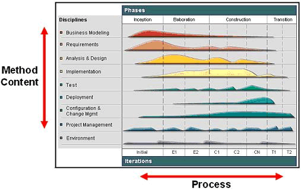

Welcome to Eclipse Process Framework (EPF) Composer. EPF Composer is a tool platform that enables process engineers and managers to implement, deploy, and maintain processes for organizations or individual projects. Typically, two key problems need to be addressed to successfully deploy new processes.
First, development teams need to be educated on the methods applicable to the roles that they are responsible for. Software developers typically need to learn how to do analysis and design, testers need to learn how to test implementations against requirements, managers need to learn how to manage the project scope and change, and so on. Some organizations assume that developers implicitly know how to do such work without documenting their methods, but many organizations want to establish common and regulated practices, to drive specific improvement objectives, and to meet compliance standards.
Second, development teams need to understand how to apply these methods throughout a development lifecycle. That is, they need to define or select a development process. For example, requirements management methods have to be applied differently in early phases of a project where the focus is on elicitation of stakeholder needs and requirements and scoping a vision, than in later phases where the focus is on managing requirements updates and changes and performing impact analysis of these requirements changes. Teams also need clear understanding of how the different tasks of the methods relate to each other, for example, how the change management method impacts the requirements management method as well as regression testing method throughout the lifecycle. Even self-organizing teams need to define a process that gives at minimum some guidance on how the development will be scoped throughout the lifecycle, when milestones will be achieved and verified, and so on.
To that end, EPF Composer has two main purposes:
IBM Eclipse Process Framework Composer provides the following new key capabilities:
To effectively work with EPF Composer, you need to understand a few concepts that are used to organize the content. The pages Method Content Authoring Overview and Process Authoring Overview contain more detail and concrete examples of how to work in the tool. This page provides you with a general overview of these concepts.
The most fundamental principle in EPF Composer is the separation of reusable core method content from its application in processes. This directly relates back to the two purposes of EPF Composer described in the first section. Almost all of EPF Composer's concepts are categorized along this separation. Method content describes what is to be produced, the necessary skills required and the step-by-step explanations describing how specific development goals are achieved. These method content descriptions are independent of a development lifecycle. Processes describe the development lifecycle. Processes take the method content elements and relate them into semi-ordered sequences that are customized to specific types of projects.

The figure above shows how this separation is depicted in Basic Unified Process. Method content, describing how development work is being performed, is categorized by disciplines along the y-axis of the diagram. The work described in a process is seen along the x-axis representing the timeline. This is the lifecycle of a development project. It expresses when what work will be performed. The graph in the illustration represents an estimated workload for each discipline. As you see, for example, one never stops working on requirements in RUP, but there are certainly peak times in which most of the requirements elicitation and description work is performed. There are also times at which a downward trend needs to be observed where fewer and fewer requirements changes have to be processed to bring the project to a close. This avoids what is referred to as feature creep in which requirements work remains constant or even increases. Hence, a lifecycle (process) expresses the variances of work performed in the various disciplines (method content).
The picture above provides a summary of the key elements used in EPF Composer and how they relate to method content or process. As you see, method content is primarily expressed using work products, roles, tasks, and guidance. Guidance, such as checklists, examples, or roadmaps, can also be defined to provide exemplary walkthroughs of a process. On the right-hand side of the diagram, you see the elements used to represent processes in EPF Composer. The main element is the activity that can be nested to define breakdown structures as well as related to each other to define a flow of work. Activities also contain descriptors that reference method content. Activities are used to define processes of which EPF Composer support two main kinds: delivery processes and capability patterns. Delivery processes represent a complete and integrated process template for performing one specific type of project. They describe a complete end-to-end project lifecycle and are used as a reference for running projects with similar characteristics. Capability patterns are processes that express and communicate process knowledge for a key area of interest such as a discipline or a best practice. They are also used as building blocks to assemble delivery processes or larger capability patterns. This ensures optimal reuse and application of their key best practices in process authoring activities in EPF Composer.
For more details on Eclipse Process Framework Composer, see the online help: